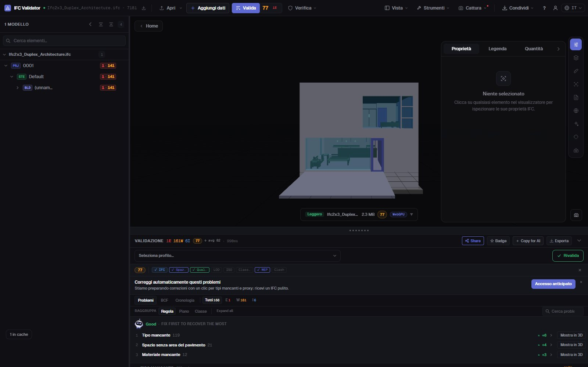
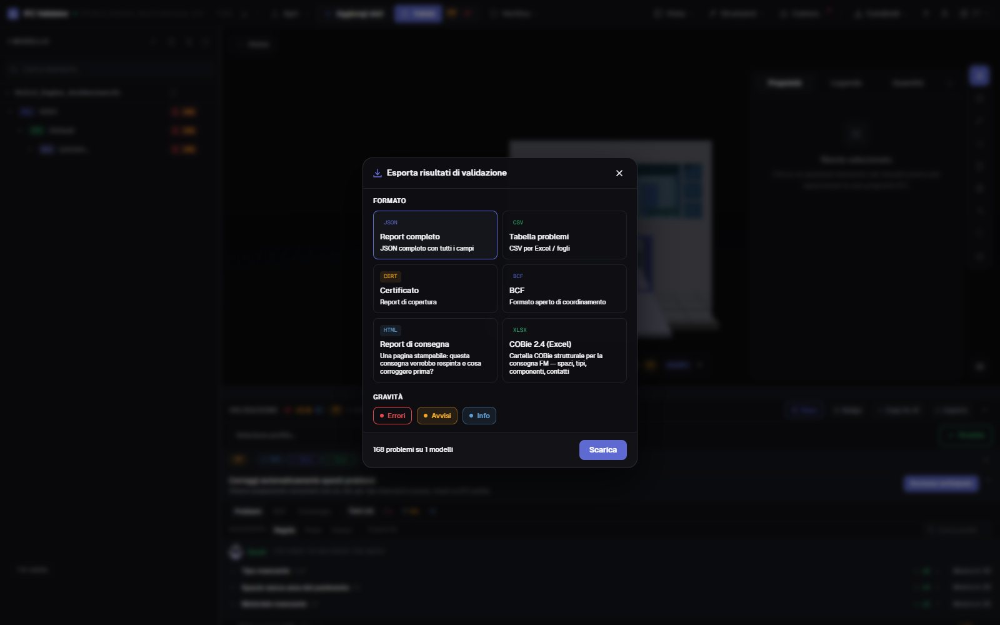

Controllo qualità IFC
punteggio e report in 30 s
Trascina un IFC e ottieni il suo Health Score da 0 a 100 con 44 regole di qualità — GUID, struttura spaziale, tipi, materiali, set di proprietà, coordinate — con i tre problemi che costano più punti in cima. Poi esporta un report di consegna stampabile, un certificato, BCF o COBie.
Controlla il modello — gratis →Senza account · Nessun caricamento · Nel tuo browser · Gratis

Cosa puoi fare
Un controllo che puoi consegnare
Un numero per il committente, l’elenco completo per l’autore e la prova per l’ACDat.
Health Score 0–100
Un numero per la qualità dei dati del modello, pesato per gravità, con la media di settore per confronto.
Cosa correggere prima
Le regole che costano più punti, con i punti recuperabili — e un pulsante per vederne gli elementi in 3D.
44 regole + IDS
GUID, gerarchia spaziale, orfani, tipi, materiali, Pset, unità, coordinate, interferenze — e qualsiasi file IDS buildingSMART.
Report di consegna stampabile
Un report HTML di una pagina (questa consegna sarebbe respinta, cosa correggere) che si stampa o si salva in PDF dal browser.
Certificato, BCF, COBie
Un certificato di copertura, issue BCF 2.1 per l’autore, CSV/JSON e una cartella COBie 2.4.
Nessun caricamento
Il controllo gira nel browser con WebAssembly. Sotto NDA, offline, su qualsiasi computer.
Schermate

FAQ
Domande frequenti
Cos’è un controllo qualità di un modello IFC?
Una revisione automatica della qualità dei dati di un file IFC: struttura, identificativi, classificazione, proprietà e coordinate. IFC Viewer Online la riassume in un Health Score da 0 a 100 ed elenca ogni problema con l’elemento coinvolto.
Posso avere il risultato come report PDF?
Sì. Esporta il «Report di consegna»: un report HTML stampabile di una pagina con punteggio, conteggi e priorità. Aprilo e stampa o «Salva come PDF» dal browser. Disponibili anche certificato JSON, CSV, BCF e COBie.
Devo caricare il modello IFC per controllarlo?
No. A differenza dei servizi che richiedono il caricamento, il file viene aperto e controllato nel browser; non viene mai inviato a un server.
Cos’è un buon punteggio?
90–100 è pronto per la consegna, 75–89 va bene per il coordinamento con piccole correzioni, 50–74 richiede lavoro prima della consegna, sotto 50 ci sono problemi seri nei dati.
È gratis?
Sì, per qualsiasi uso, compresi i progetti commerciali, senza account e senza limiti di dimensione a pagamento.
Controlla il modello prima del tuo committente.
Health Score · Priorità · Report stampabile · BCF · COBie
Controlla il modello — gratis →